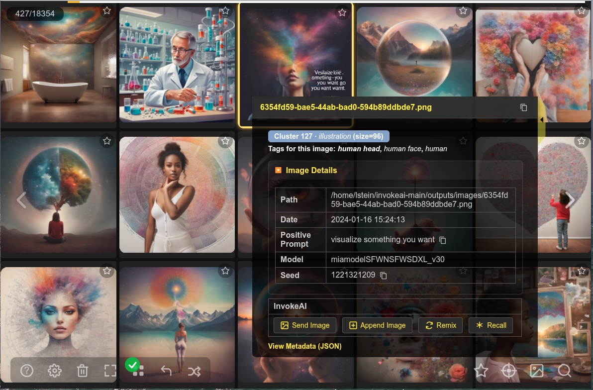
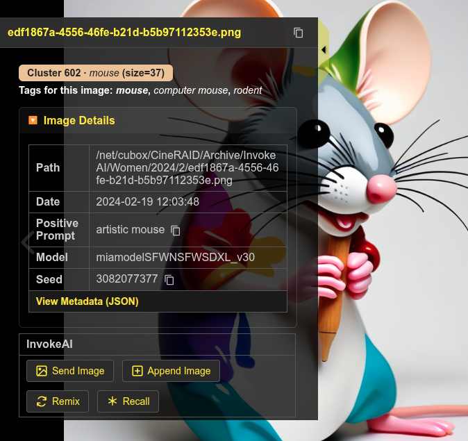
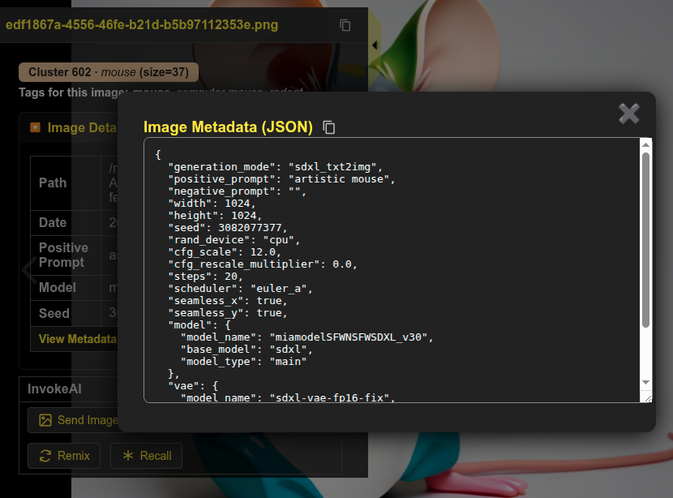
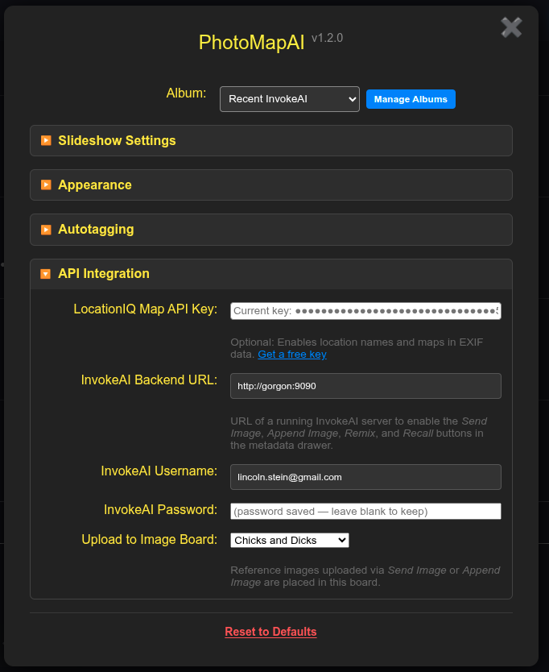
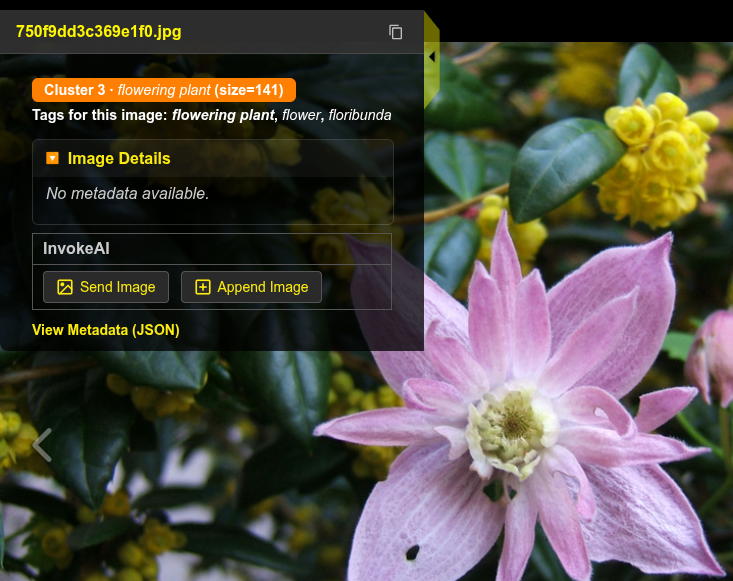

InvokeAI Integration
PhotoMapAI works well as a browser for AI images generated by InvokeAI, the popular open-source generative-image application. When browsing a directory containing InvokeAI images, PhotoMapAI gives you easy access to the image's generation parameters, including the prompt, model and other parameters. You can also connect PhotoMapAI to a running InvokeAI backend to enable PhotoMapAI to send images back into InvokeAI for further work.
Background
InvokeAI is a free, locally-hosted text-to-image generator built around Stable Diffusion and related models. You can download it from the InvokeAI project page. PhotoMapAI does not require InvokeAI to be installed — every feature described elsewhere in the User Guide works on any folder of images — but if you do generate images with InvokeAI, the integration described here lets you index, search, and remix that gallery from the same interface.

Creating an InvokeAI Album
You can point PhotoMapAI directly at InvokeAI's internal image storage to create a comprehensive album of the contents of all InvokeAI's image boards, or you can selectively download images from InvokeAI and store them in an external directory for a curated experience.
Creating a Comprehensive Album
InvokeAI stores every finished image under its InvokeAI root, in a
folder named outputs/images/. The location of the root depends on
how you installed InvokeAI:
-
Launcher / community edition (default) — the launcher prompts you for the root directory the first time it runs and remembers your choice. On Windows it is typically
C:\Users\<you>\invokeai; on macOS and Linux it is typically~/invokeai. -
Manual installs — whatever path you passed via
--rootorINVOKEAI_ROOT. You can confirm the path from the InvokeAI web UI under Settings → Application.
Once you know the root, point a new PhotoMapAI album at the outputs/images/ subfolder:
-
Open Settings → Manage Albums and press .
-
Give the album a key (for example
invokeai) and a display name (for exampleInvokeAI Gallery). -
In Image Folder(s), enter the full path to
<invokeai-root>/outputs/images. -
Save the album. PhotoMapAI will index every image it finds; see Managing Albums for what to expect during indexing.
Note
PhotoMapAI does not watch the InvokeAI gallery for new files. Whenever you have generated a batch of images you want to browse or search, return to the Album Manager, select the album, and press the blue button. Only the new and removed files are processed, so the update is much faster than the initial indexing pass.
Selectively Indexing InvokeAI Image Boards
When you index the entire InvokeAI internal images directory, the resulting album will be a mixture of images from all InvokeAI boards, including uploaded assets. For a more controlled experience, you can selectively download InvokeAI image boards, save the images to an external directory, and add that directory to your album.
- Open InvokeAI in a browser.
- Right click on a board you wish to add to PhotoMapAI.
- Select "Download Board" to download the images as a zip file.
- Unpack the zip file in a folder that PhotoMapAI has access to.
- Create/add this folder to the PhotoMapAI album of your choice.
Note
When you update a board, you will have to repeat this procedure. PhotoMapAI remembers which images were previously indexed and only indexes new images that it finds. Check back for a fuller integration of PhotoMapAI with Invoke's image boards that is in the planning phase.*
Viewing InvokeAI Metadata
When an InvokeAI-generated image is selected in the PhotoMap browser, a summary of its metadata will appear in the metadata drawer (see below). The drawer will show key generation parameters, including the date generated, the positive and negative prompts, the AI model used, the seed, the init image, and any LoRAs or reference images attached to the generation. Most fields have an icon next to them that lets you copy their values into the system clipboard.
Click on "View Metadata" to see the full metadata with all generation parameters listed.


Enabling Remix and Reference Images
For fuller integration, you may configure PhotoMapAI so that it can send images and generation parameters to a running InvokeAI backend. This allows you to regenerate and remix previously-generated images, as well as to send completely new images to InvokeAI for editing.
The configuration is as follows:
- Make sure InvokeAI is running and note the URL it reports on startup (by default
http://localhost:9090). - In PhotoMapAI, open Settings and scroll to the InvokeAI Backend URL field.
- Enter the full URL — including the
http://orhttps://prefix and the port.
PhotoMapAI saves the value as you type and immediately probes the backend. If the URL is reachable and looks like InvokeAI, the InvokeAI Username, InvokeAI Password, and Upload to Image Board rows appear underneath. If the field underneath the URL turns red with a warning icon, see Troubleshooting for what each message means.
If your InvokeAI server is running in multi-user mode, fill in the InvokeAI Username and InvokeAI Password fields with the credentials you use to log in to InvokeAI itself. The password is stored in PhotoMapAI's user-config directory and is never echoed back to the browser. For single-user installs (the default) leave both fields blank.
Once a valid InvokeAI URL is entered, the Upload to Image Board dropdown menu will appear. This lists the InvokeAI boards you have access to. Choose the board you wish to upload new image assets into.

Recall, Remix and Reference Image
Three actions appear in the metadata drawer when an InvokeAI backend is configure. Which ones are available depends on the image that is currently selected.
Use as Ref Image
Any image — generated by InvokeAI or not — can be sent to InvokeAI as a reference image. PhotoMapAI uploads the image bytes to your InvokeAI gallery (in the board you selected above) so you can immediately drop it into a Reference Image / IP-Adapter / ControlNet layer. This is the only button that appears for non-InvokeAI images, since there is no generation metadata to recall.

Remix
For images that contain InvokeAI generation metadata, Remix sends every parameter — the prompt, model, LoRAs, scheduler, dimensions, reference layers, and so on — back to InvokeAI, but omits the seed. Pressing Invoke in InvokeAI then produces a new image that is stylistically similar to the original but unique. Use this when you want a variation rather than a re-creation.
Recall
Recall is identical to Remix except that the seed is preserved. With the same model, LoRAs, prompts, and seed, InvokeAI will reproduce the original image bit-for-bit (assuming the underlying model files have not changed). This is useful when you want to start from a known image and edit one parameter at a time.
See Viewing InvokeAI Metadata for screenshots.
Troubleshooting
If something goes wrong while saving the InvokeAI URL or probing the backend, the hint underneath the URL field turns red and shows one of the following messages:
- InvokeAI URL must use http:// or https:// — the URL you typed uses an unsupported scheme. PhotoMapAI rejects anything other than
httpandhttps(for example,file://is not allowed). - InvokeAI URL must include a host — the URL is syntactically valid but has no host portion. Add a host name or IP address (for example
http://localhost:9090). - Could not reach backend — the URL is well-formed but PhotoMapAI could not connect to the server. Check that InvokeAI is running, that the port matches, and (for remote servers) that no firewall is blocking the connection.
- Server is reachable but doesn't appear to be an InvokeAI backend — PhotoMapAI got an HTTP response but it was not what InvokeAI's
/api/v1/app/versionendpoint returns. Double-check the URL and port; you may have pointed PhotoMapAI at a different service running on the same machine.
A few situations are not surfaced inline and are worth knowing about:
- Boards dropdown is empty or stuck on Uncategorized — usually means authentication failed silently. If your InvokeAI is in multi-user mode, fill in the username and password and re-enter the URL to retrigger the probe.
- Recall / Remix succeeds but no image queues in InvokeAI — switch to InvokeAI's browser tab. The recalled parameters land in the canvas/generation panel; you still have to press Invoke to start the queue.
- Buttons stay greyed out for an InvokeAI-generated image — the image was probably produced by an InvokeAI version PhotoMapAI does not yet recognise. Check the Show full metadata link at the bottom of the drawer to confirm the metadata is present, and please open an issue so we can add support for the new schema.
PhotoMapAI and InvokeAI on different machines
The integration is designed for a single workstation but works across machines too. The important thing to remember is that only the PhotoMapAI server talks to InvokeAI — your browser does not need to be able to reach the InvokeAI port. Concretely:
- Start InvokeAI with a non-loopback bind address (for example
--host 0.0.0.0) so the PhotoMapAI machine can reach it. - In PhotoMapAI's InvokeAI Backend URL field, use the LAN address or hostname of the InvokeAI machine, not
localhost(for examplehttp://10.0.0.42:9090). - The album path you configured in Creating an InvokeAI Album must be readable by the PhotoMapAI server. If InvokeAI's
outputs/images/lives on the InvokeAI machine, mount it on the PhotoMapAI machine over SMB / NFS / SSHFS and point the album at the mount point.
The Use as Ref Image action uploads the image bytes over the wire and works regardless of where the file lives. Recall and Remix only send metadata, so they also work cross-machine — but the receiving InvokeAI server must have the same models, LoRAs, and embeddings installed for the recalled parameters to produce the expected result.